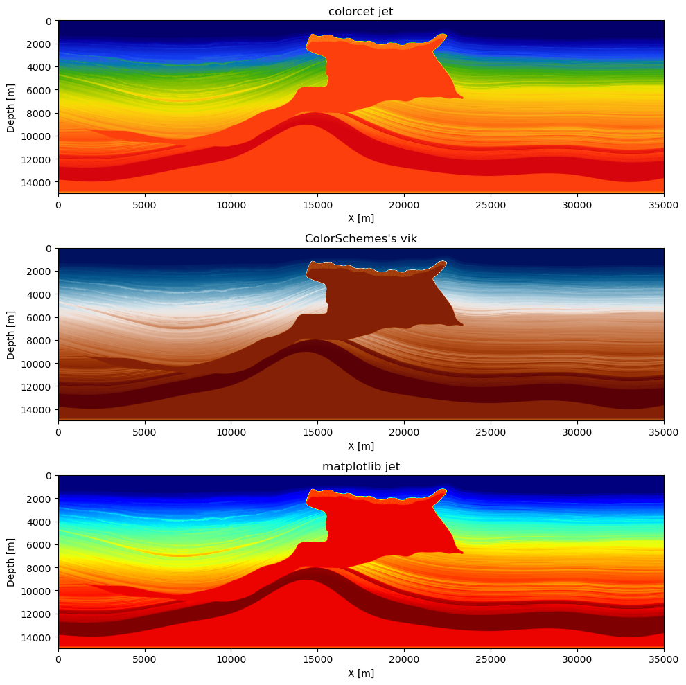
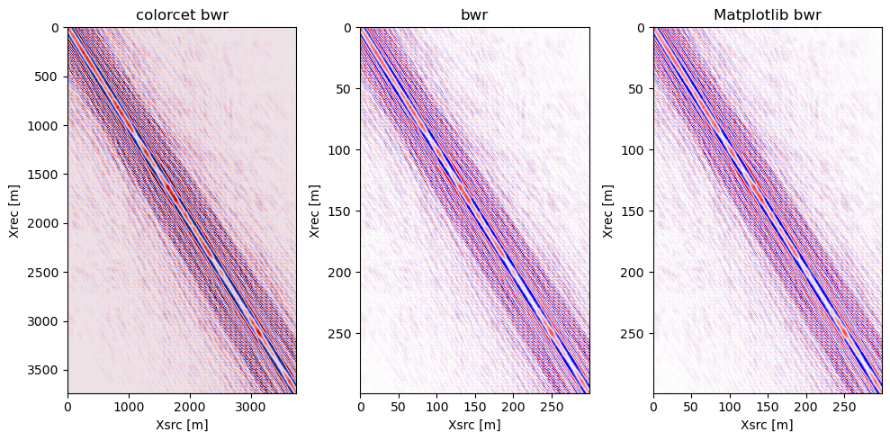
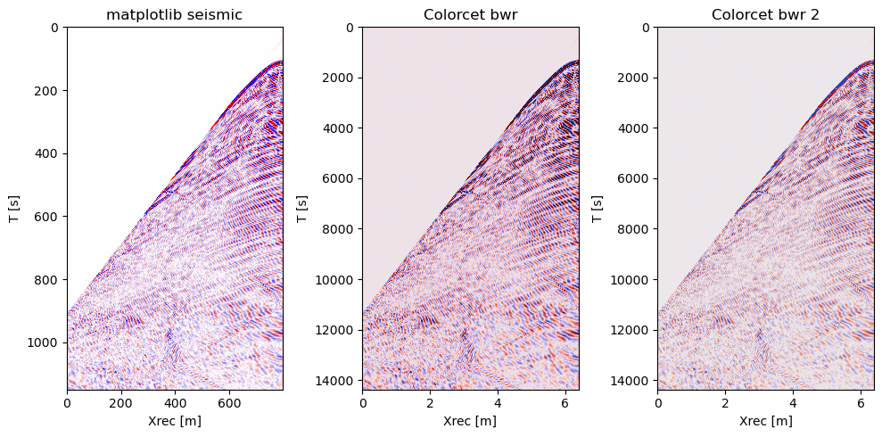
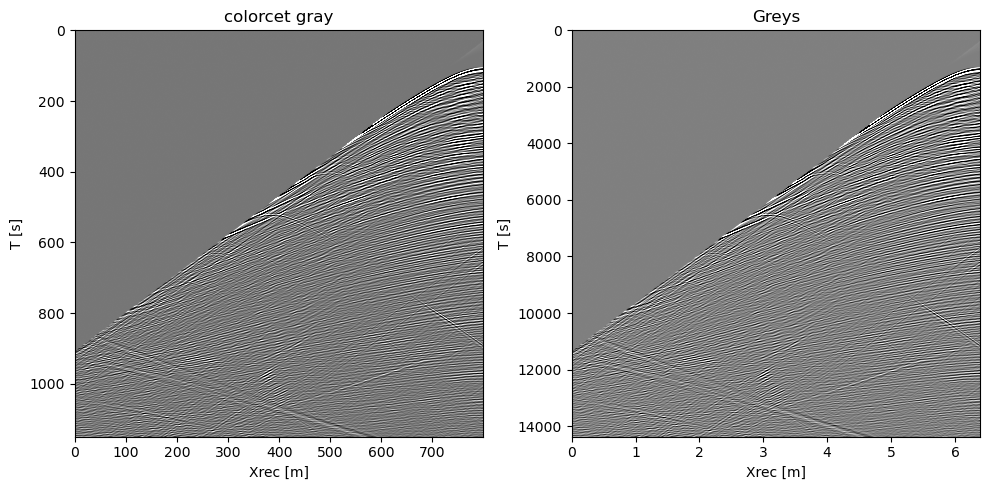

Plotting data and models with SlimPlotting
title: Overview of SlimPlotting utilities author: Mathias Louboutin date: April 2023 –-
This example script is written using Weave.jl and can be converted to different format for documentation and usage This example is converted to a markdown file for the documentation.
Import SlimPlotting, SegyIO to read seismic data, JLD2 for hdf5-like files
using SlimPlotting, SegyIO, JLD2Initialize all needed data
Close all figures if any existing
SlimPlotting.PyPlot.close(:all)Path to the files and data used for these examples
data_path = dirname(pathof(SlimPlotting))*"/../data/";Read the data
# Pure array
vp = Float32.(segy_read("$(data_path)2dVP.sgy").data);
dm = diff(vp, dims=1);
shot = Float32.(segy_read("$(data_path)2dshot.segy").data);
xloc = get_header(segy_read("$(data_path)2dshot.segy"), "GroupX")
fslice = JLD2.load("$(data_path)2dfslice.jld");Create structures to mimic JUDI-like inputs
In the future this should be instead converted into an extension rather than implicit knowledge of the structure
# Dummy structures to check plot with metadata
struct geometry
xloc
end
struct shotrec
data
dt
geometry
end
struct Phys
data
d
end
## Make physical objects
dmp = Phys(dm, (10, 20))
vpp = Phys(vp, (10, 20))
fslicep = Phys(fslice["Freq"][1, :, :], (12.5, 12.5))
shotp = shotrec([shot], 0.008, geometry([xloc]));Model perturbation
We plot here a model perturbation (i.e a Reverse-time Migrated image) and compare a few colormaps:
- The
seiscm.seimiccolormap - The standard matplotlib
Greyscolormap - The perceptually accurate
Greyscolormap from colorcet
figure(figsize=(10, 10))
subplot(311)
plot_simage(dmp; new_fig=false, name="Seismic")
subplot(312)
plot_simage(dm, (10, 20); cmap="Greys", new_fig=false, name="Greys")
subplot(313)
plot_simage(dm, (10, 20); cmap=:cet_CET_L1, new_fig=false, name="Colorcet Greys")
tight_layout();display(gcf())
Velocity
We plot here a velocity model and compare a few colormaps:
- The
seiscm.frequencycolormap - The ColorSchemes
vikcolormap - The perceptually accurate
jetcolormap from colorcet namedcet_rainbow4
figure(figsize=(10, 10))
subplot(311)
plot_velocity(vpp; new_fig=false, name="colorcet jet", cmap="cet_rainbow4")
subplot(312)
plot_velocity(vp, (10, 20); cmap=:vik, new_fig=false, name="ColorSchemes's vik")
subplot(313)
plot_velocity(vp, (10, 20); cmap=seiscm(:frequency), new_fig=false, name="Seiscm")
tight_layout();display(gcf())
Frequency slice
We plot here a frequency slice for a seismic dataset and compare a few colormaps:
- The
seiscm.bwrcolormap - The standard matplotlib
bwrcolormap - The perceptually accurate
bwrcolormap from colorcet namedcet_CET_D1A
# Frequency slice
figure(figsize=(10, 5))
subplot(131)
plot_fslice(fslice["Freq"][1, :, :], (12.5, 12.5); new_fig=false, name="colorcet bwr")
subplot(132)
plot_fslice(fslicep; cmap=:bwr, new_fig=false, name="bwr")
subplot(133)
plot_fslice(fslicep; cmap=seiscm(:bwr), new_fig=false, name="Seiscm bwr")
tight_layout();display(gcf())
Shot record
Seismic blue-white-red
We plot here a frequency slice for a seismic dataset and compare a few colormaps for the bwr colormap:
- The
seiscm.bwrcolormap - The standard matplotlib
bwrcolormap - The perceptually accurate
bwrcolormap from colorcet namedcet_CET_D1A
# Shot record
figure(figsize=(10, 5))
subplot(131)
plot_sdata(shotp; new_fig=false, name="matplotlib seismic", cmap="bwr")
subplot(132)
plot_sdata(shot, (12.5, 0.008); cmap=:cet_CET_D1A, new_fig=false, name="Colorcet bwr")
subplot(133)
plot_sdata(shot, (12.5, 0.008); cmap=seiscm(:bwr), new_fig=false, name="Seismic bwr")
tight_layout();display(gcf())
Seismic greys
We plot here a frequency slice for a seismic dataset and compare a few colormaps for the greys colormap:
- The standard matplotlib
graycolormap - The perceptually accurate
greyscolormap from colorcet namedcet_CET_L1
# Shot record
figure(figsize=(10, 5))
subplot(121)
plot_sdata(shotp; new_fig=false, name="colorcet gray", cmap="cet_CET_L1")
subplot(122)
plot_sdata(shot, (12.5, 0.008); cmap="gray", new_fig=false, name="Greys")
tight_layout();display(gcf())
Compare shot records
One of the main visual representation of FWI inversion is to compare the true shot record with the synthetic data from the current velocity model. A good way to visualize this difference is to overlay the two shot records alternating the traces between each shots with a different colormap to check the alignment of the events. We show below how to do this with the compare_shots function
figure(figsize=(10, 5))
subplot(131)
compare_shots(shotp, shotp; new_fig=false, name="Overlap compare")
subplot(132)
compare_shots(shotp, shotp; new_fig=false, cmap=("bwr", "RdBu"), name="Overlap compare custom cmap")
subplot(133)
compare_shots(shotp, shotp; side_by_side=true, new_fig=false, name="Side by side compare")
tight_layout();display(gcf())(inds1, inds2) = ([1, 2, 3, 4, 5, 6, 7, 8, 9, 10, 11, 12, 13, 14, 15, 16, 1
7, 18, 19, 20, 41, 42, 43, 44, 45, 46, 47, 48, 49, 50, 51, 52, 53, 54, 55,
56, 57, 58, 59, 60, 81, 82, 83, 84, 85, 86, 87, 88, 89, 90, 91, 92, 93, 94,
95, 96, 97, 98, 99, 100, 121, 122, 123, 124, 125, 126, 127, 128, 129, 130,
131, 132, 133, 134, 135, 136, 137, 138, 139, 140, 161, 162, 163, 164, 165,
166, 167, 168, 169, 170, 171, 172, 173, 174, 175, 176, 177, 178, 179, 180,
201, 202, 203, 204, 205, 206, 207, 208, 209, 210, 211, 212, 213, 214, 215,
216, 217, 218, 219, 220, 241, 242, 243, 244, 245, 246, 247, 248, 249, 250,
251, 252, 253, 254, 255, 256, 257, 258, 259, 260, 281, 282, 283, 284, 285,
286, 287, 288, 289, 290, 291, 292, 293, 294, 295, 296, 297, 298, 299, 300,
321, 322, 323, 324, 325, 326, 327, 328, 329, 330, 331, 332, 333, 334, 335,
336, 337, 338, 339, 340, 361, 362, 363, 364, 365, 366, 367, 368, 369, 370,
371, 372, 373, 374, 375, 376, 377, 378, 379, 380, 401, 402, 403, 404, 405,
406, 407, 408, 409, 410, 411, 412, 413, 414, 415, 416, 417, 418, 419, 420,
441, 442, 443, 444, 445, 446, 447, 448, 449, 450, 451, 452, 453, 454, 455,
456, 457, 458, 459, 460, 481, 482, 483, 484, 485, 486, 487, 488, 489, 490,
491, 492, 493, 494, 495, 496, 497, 498, 499, 500, 521, 522, 523, 524, 525,
526, 527, 528, 529, 530, 531, 532, 533, 534, 535, 536, 537, 538, 539, 540,
561, 562, 563, 564, 565, 566, 567, 568, 569, 570, 571, 572, 573, 574, 575,
576, 577, 578, 579, 580, 601, 602, 603, 604, 605, 606, 607, 608, 609, 610,
611, 612, 613, 614, 615, 616, 617, 618, 619, 620, 641, 642, 643, 644, 645,
646, 647, 648, 649, 650, 651, 652, 653, 654, 655, 656, 657, 658, 659, 660,
681, 682, 683, 684, 685, 686, 687, 688, 689, 690, 691, 692, 693, 694, 695,
696, 697, 698, 699, 700, 721, 722, 723, 724, 725, 726, 727, 728, 729, 730,
731, 732, 733, 734, 735, 736, 737, 738, 739, 740, 761, 762, 763, 764, 765,
766, 767, 768, 769, 770, 771, 772, 773, 774, 775, 776, 777, 778, 779, 780]
, [21, 22, 23, 24, 25, 26, 27, 28, 29, 30, 31, 32, 33, 34, 35, 36, 37, 38,
39, 40, 61, 62, 63, 64, 65, 66, 67, 68, 69, 70, 71, 72, 73, 74, 75, 76, 77,
78, 79, 80, 101, 102, 103, 104, 105, 106, 107, 108, 109, 110, 111, 112, 11
3, 114, 115, 116, 117, 118, 119, 120, 141, 142, 143, 144, 145, 146, 147, 14
8, 149, 150, 151, 152, 153, 154, 155, 156, 157, 158, 159, 160, 181, 182, 18
3, 184, 185, 186, 187, 188, 189, 190, 191, 192, 193, 194, 195, 196, 197, 19
8, 199, 200, 221, 222, 223, 224, 225, 226, 227, 228, 229, 230, 231, 232, 23
3, 234, 235, 236, 237, 238, 239, 240, 261, 262, 263, 264, 265, 266, 267, 26
8, 269, 270, 271, 272, 273, 274, 275, 276, 277, 278, 279, 280, 301, 302, 30
3, 304, 305, 306, 307, 308, 309, 310, 311, 312, 313, 314, 315, 316, 317, 31
8, 319, 320, 341, 342, 343, 344, 345, 346, 347, 348, 349, 350, 351, 352, 35
3, 354, 355, 356, 357, 358, 359, 360, 381, 382, 383, 384, 385, 386, 387, 38
8, 389, 390, 391, 392, 393, 394, 395, 396, 397, 398, 399, 400, 421, 422, 42
3, 424, 425, 426, 427, 428, 429, 430, 431, 432, 433, 434, 435, 436, 437, 43
8, 439, 440, 461, 462, 463, 464, 465, 466, 467, 468, 469, 470, 471, 472, 47
3, 474, 475, 476, 477, 478, 479, 480, 501, 502, 503, 504, 505, 506, 507, 50
8, 509, 510, 511, 512, 513, 514, 515, 516, 517, 518, 519, 520, 541, 542, 54
3, 544, 545, 546, 547, 548, 549, 550, 551, 552, 553, 554, 555, 556, 557, 55
8, 559, 560, 581, 582, 583, 584, 585, 586, 587, 588, 589, 590, 591, 592, 59
3, 594, 595, 596, 597, 598, 599, 600, 621, 622, 623, 624, 625, 626, 627, 62
8, 629, 630, 631, 632, 633, 634, 635, 636, 637, 638, 639, 640, 661, 662, 66
3, 664, 665, 666, 667, 668, 669, 670, 671, 672, 673, 674, 675, 676, 677, 67
8, 679, 680, 701, 702, 703, 704, 705, 706, 707, 708, 709, 710, 711, 712, 71
3, 714, 715, 716, 717, 718, 719, 720, 741, 742, 743, 744, 745, 746, 747, 74
8, 749, 750, 751, 752, 753, 754, 755, 756, 757, 758, 759, 760, 781, 782, 78
3, 784, 785, 786, 787, 788, 789, 790, 791, 792, 793, 794, 795, 796, 797, 79
8, 799, 800])
(inds1, inds2) = ([1, 2, 3, 4, 5, 6, 7, 8, 9, 10, 11, 12, 13, 14, 15, 16, 1
7, 18, 19, 20, 41, 42, 43, 44, 45, 46, 47, 48, 49, 50, 51, 52, 53, 54, 55,
56, 57, 58, 59, 60, 81, 82, 83, 84, 85, 86, 87, 88, 89, 90, 91, 92, 93, 94,
95, 96, 97, 98, 99, 100, 121, 122, 123, 124, 125, 126, 127, 128, 129, 130,
131, 132, 133, 134, 135, 136, 137, 138, 139, 140, 161, 162, 163, 164, 165,
166, 167, 168, 169, 170, 171, 172, 173, 174, 175, 176, 177, 178, 179, 180,
201, 202, 203, 204, 205, 206, 207, 208, 209, 210, 211, 212, 213, 214, 215,
216, 217, 218, 219, 220, 241, 242, 243, 244, 245, 246, 247, 248, 249, 250,
251, 252, 253, 254, 255, 256, 257, 258, 259, 260, 281, 282, 283, 284, 285,
286, 287, 288, 289, 290, 291, 292, 293, 294, 295, 296, 297, 298, 299, 300,
321, 322, 323, 324, 325, 326, 327, 328, 329, 330, 331, 332, 333, 334, 335,
336, 337, 338, 339, 340, 361, 362, 363, 364, 365, 366, 367, 368, 369, 370,
371, 372, 373, 374, 375, 376, 377, 378, 379, 380, 401, 402, 403, 404, 405,
406, 407, 408, 409, 410, 411, 412, 413, 414, 415, 416, 417, 418, 419, 420,
441, 442, 443, 444, 445, 446, 447, 448, 449, 450, 451, 452, 453, 454, 455,
456, 457, 458, 459, 460, 481, 482, 483, 484, 485, 486, 487, 488, 489, 490,
491, 492, 493, 494, 495, 496, 497, 498, 499, 500, 521, 522, 523, 524, 525,
526, 527, 528, 529, 530, 531, 532, 533, 534, 535, 536, 537, 538, 539, 540,
561, 562, 563, 564, 565, 566, 567, 568, 569, 570, 571, 572, 573, 574, 575,
576, 577, 578, 579, 580, 601, 602, 603, 604, 605, 606, 607, 608, 609, 610,
611, 612, 613, 614, 615, 616, 617, 618, 619, 620, 641, 642, 643, 644, 645,
646, 647, 648, 649, 650, 651, 652, 653, 654, 655, 656, 657, 658, 659, 660,
681, 682, 683, 684, 685, 686, 687, 688, 689, 690, 691, 692, 693, 694, 695,
696, 697, 698, 699, 700, 721, 722, 723, 724, 725, 726, 727, 728, 729, 730,
731, 732, 733, 734, 735, 736, 737, 738, 739, 740, 761, 762, 763, 764, 765,
766, 767, 768, 769, 770, 771, 772, 773, 774, 775, 776, 777, 778, 779, 780]
, [21, 22, 23, 24, 25, 26, 27, 28, 29, 30, 31, 32, 33, 34, 35, 36, 37, 38,
39, 40, 61, 62, 63, 64, 65, 66, 67, 68, 69, 70, 71, 72, 73, 74, 75, 76, 77,
78, 79, 80, 101, 102, 103, 104, 105, 106, 107, 108, 109, 110, 111, 112, 11
3, 114, 115, 116, 117, 118, 119, 120, 141, 142, 143, 144, 145, 146, 147, 14
8, 149, 150, 151, 152, 153, 154, 155, 156, 157, 158, 159, 160, 181, 182, 18
3, 184, 185, 186, 187, 188, 189, 190, 191, 192, 193, 194, 195, 196, 197, 19
8, 199, 200, 221, 222, 223, 224, 225, 226, 227, 228, 229, 230, 231, 232, 23
3, 234, 235, 236, 237, 238, 239, 240, 261, 262, 263, 264, 265, 266, 267, 26
8, 269, 270, 271, 272, 273, 274, 275, 276, 277, 278, 279, 280, 301, 302, 30
3, 304, 305, 306, 307, 308, 309, 310, 311, 312, 313, 314, 315, 316, 317, 31
8, 319, 320, 341, 342, 343, 344, 345, 346, 347, 348, 349, 350, 351, 352, 35
3, 354, 355, 356, 357, 358, 359, 360, 381, 382, 383, 384, 385, 386, 387, 38
8, 389, 390, 391, 392, 393, 394, 395, 396, 397, 398, 399, 400, 421, 422, 42
3, 424, 425, 426, 427, 428, 429, 430, 431, 432, 433, 434, 435, 436, 437, 43
8, 439, 440, 461, 462, 463, 464, 465, 466, 467, 468, 469, 470, 471, 472, 47
3, 474, 475, 476, 477, 478, 479, 480, 501, 502, 503, 504, 505, 506, 507, 50
8, 509, 510, 511, 512, 513, 514, 515, 516, 517, 518, 519, 520, 541, 542, 54
3, 544, 545, 546, 547, 548, 549, 550, 551, 552, 553, 554, 555, 556, 557, 55
8, 559, 560, 581, 582, 583, 584, 585, 586, 587, 588, 589, 590, 591, 592, 59
3, 594, 595, 596, 597, 598, 599, 600, 621, 622, 623, 624, 625, 626, 627, 62
8, 629, 630, 631, 632, 633, 634, 635, 636, 637, 638, 639, 640, 661, 662, 66
3, 664, 665, 666, 667, 668, 669, 670, 671, 672, 673, 674, 675, 676, 677, 67
8, 679, 680, 701, 702, 703, 704, 705, 706, 707, 708, 709, 710, 711, 712, 71
3, 714, 715, 716, 717, 718, 719, 720, 741, 742, 743, 744, 745, 746, 747, 74
8, 749, 750, 751, 752, 753, 754, 755, 756, 757, 758, 759, 760, 781, 782, 78
3, 784, 785, 786, 787, 788, 789, 790, 791, 792, 793, 794, 795, 796, 797, 79
8, 799, 800])Wiggle traces
We finally show the traditional wiggle plot for a shot record used in seismic.
# Wiggle plot
figure(figsize=(5, 5))
wiggle_plot(shot[1:5:end, 1:10:end], xloc[1:10:end], 0:0.02:4.6; new_fig=false)
tight_layout();display(gcf())